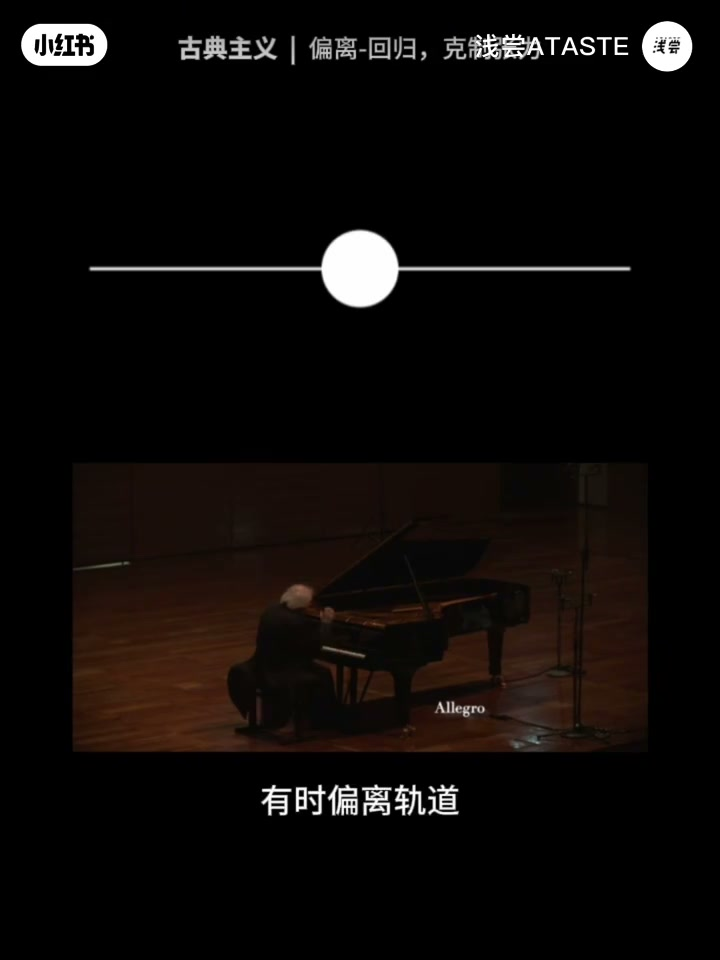
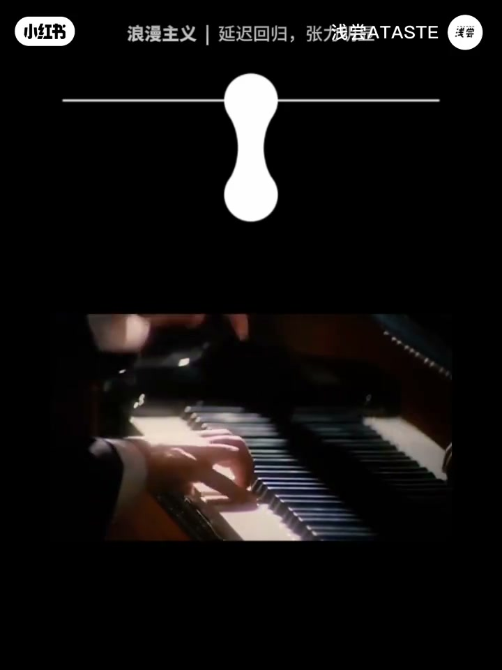
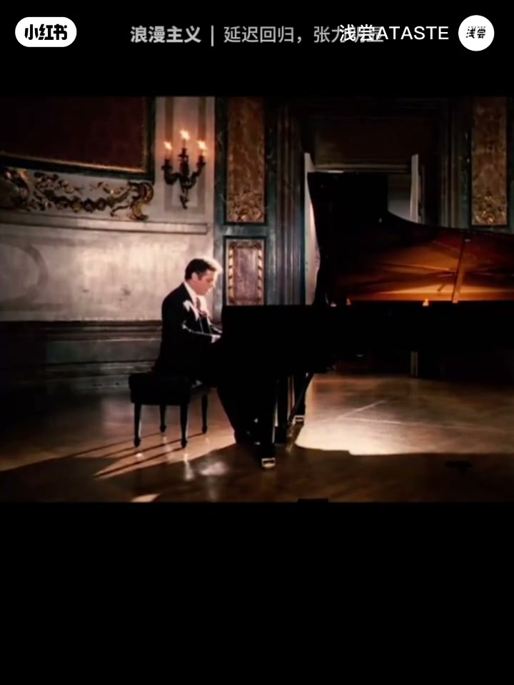
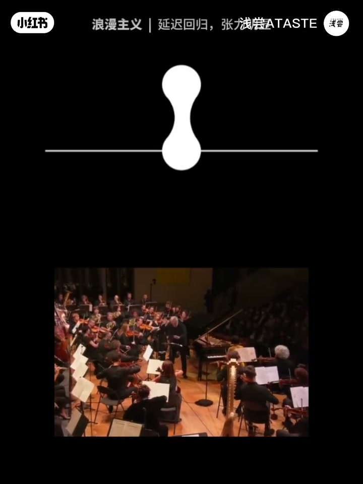
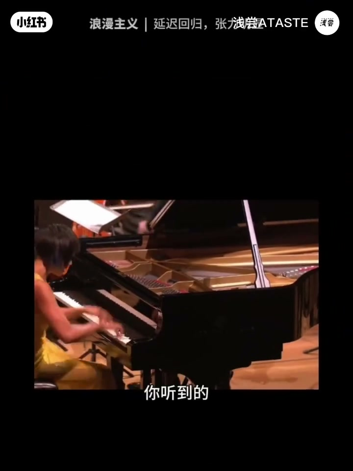
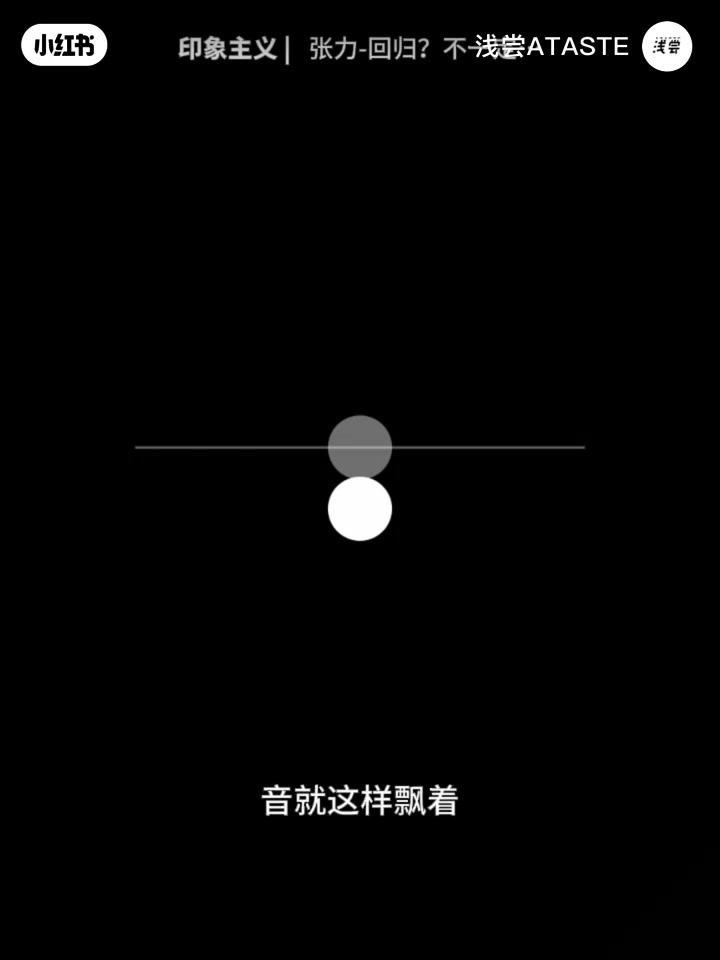
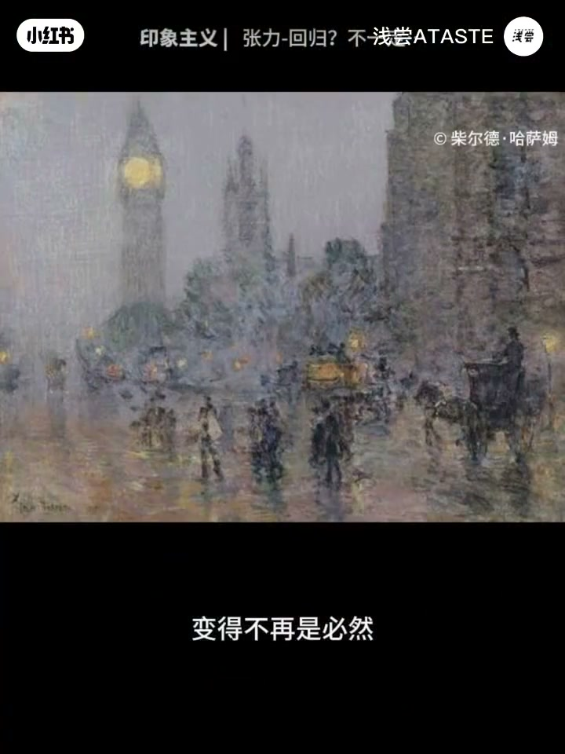

内容要点
「张力：音乐的第一性原理？」教程要点：我们听到的大部分音乐 → 本质上都在做同一件事情 → 就到张力 然后回归 → 这几乎可以说是音乐的第一性原理；详见正文。
知识结构
我们听到的大部分音乐
那么恭喜你
音响在上面展开
- 我们听到的大部分音乐
- 本质上都在做同一件事情
- 就到张力 然后回归
- 这几乎可以说是音乐的第一性原理
- 我们来听莫扎特这句
我们听到的大部分音乐
00:00–01:14我们听到的大部分音乐
我们听到的大部分音乐；本质上都在做同一件事情；就到张力 然后回归；这几乎可以说是音乐的第一性原理；我们来听莫扎特这句；我做了个可视化演示；从稳定开始；有时偏离轨道；但很快 回归稳定；这种从偏离到回归的趋势；就会产生张力；而这种回归在音乐中叫做解决；这种曲子有偏离；但马上回归 比较克制；音乐听起来有秩序 很清晰；恭喜你；盖到了古典主义音乐情感的重要精髓；再往后 贝多芬登场；张力会做得更明显；黎明这门曲《末月章》；从稳定 宽广开始；进行到这里；紧张感逐渐出现；越来越紧张；稍稍松拾；似乎快要断了；终于 回归稳定；在这里 贝多芬延迟了张力的释放


01:13–03:09那么恭喜你
那么恭喜你；从古典主义走向了浪漫主义的定决世界；浪漫主义音乐就是这样；常常让我们不断接近预期；却又迟迟不给出解决；期待 被拉长；后来的音乐张力会做得更极致；我们边听边看；更大的张力；快要扯断了；还没完；终于回来；那和马金洛夫第二钢琴协奏曲《末月章》结尾；音乐的张力不断张现；像是在积累能量；在最后的回归中 集中释放；你听到的是一种浪漫主义晚期的；典型听觉美学 崇高感；再后来 音乐还可以怎么玩；丁德达西《沉默的教堂》；这首其实也有调；但它是这样开始的；这些音不会像之前那样的音乐；有和声导向 制造一种回归的期待；音就这样飘着；句子像是没有完结似的；继续听这里；这个调性中心更像是一个声音的基底


03:09–04:32音响在上面展开
音响在上面展开；和声色彩与层次不断变化；但不太有回归的引力了；恭喜你 来到了印象主义音乐的世界；传统的和声解决；那些以调性为中心的张力与回归；变得不再是必然；音乐也有了更多的新的秩序；你看不同时期的音乐；就可以理解为张力带给我们的不同感受；古典主义讲究偏离与回归的平衡；浪漫主义不断放大张力 延迟解决；而印象主义则有更多的张力关系；也有了新的音乐秩序方式；这是一条很有用的音乐感知路径；你不需要懂太多乐理；甚至不需要食谱；只要开始留意音乐在哪里制造了期待；又如何回应 延迟；或者改变了这种期待；你就已经进入了一种更深入聆听的方式；其实张力是一种很广泛的审美认知；摄影画面 建筑空间 电影叙事；甚至我们日常生活中的选择；都可以理解为张力平衡与变化；有机会 咱继续聊；这里是潜藏 我是KM；我们一起往审美认知世界



口述/画面要点（40段）
结合 Whisper medium 与画面大字整理；专有名词已校对。
我们听到的大部分音乐
本质上都在做同一件事情
就到张力 然后回归
这几乎可以说是音乐的第一性原理
我们来听莫扎特这句
我做了个可视化演示
从稳定开始
有时偏离轨道
但很快 回归稳定
这种从偏离到回归的趋势
就会产生张力
而这种回归在音乐中叫做解决
这种曲子有偏离
但马上回归 比较克制
音乐听起来有秩序 很清晰
恭喜你
盖到了古典主义音乐情感的重要精髓
再往后 贝多芬登场
张力会做得更明显
黎明这门曲《末月章》
从稳定 宽广开始
进行到这里
紧张感逐渐出现
越来越紧张
稍稍松拾
似乎快要断了
终于 回归稳定
在这里 贝多芬延迟了张力的释放
那么恭喜你
从古典主义走向了浪漫主义的定决世界
浪漫主义音乐就是这样
常常让我们不断接近预期
却又迟迟不给出解决
期待 被拉长
后来的音乐张力会做得更极致
我们边听边看
更大的张力
快要扯断了
还没完
终于回来